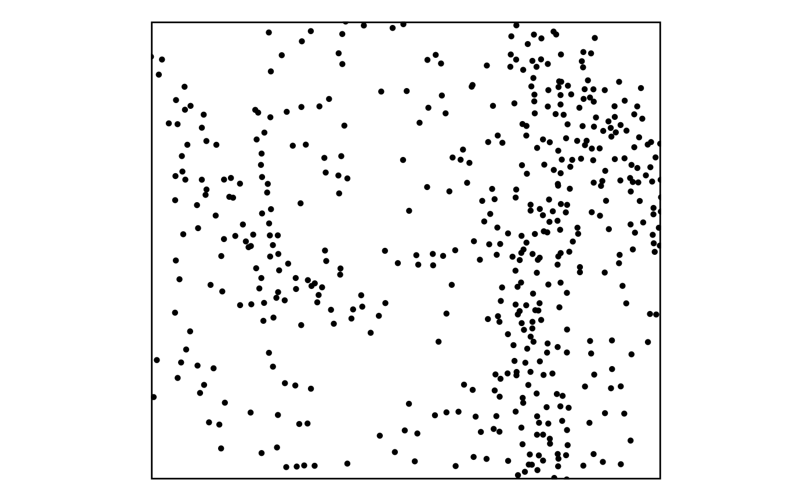
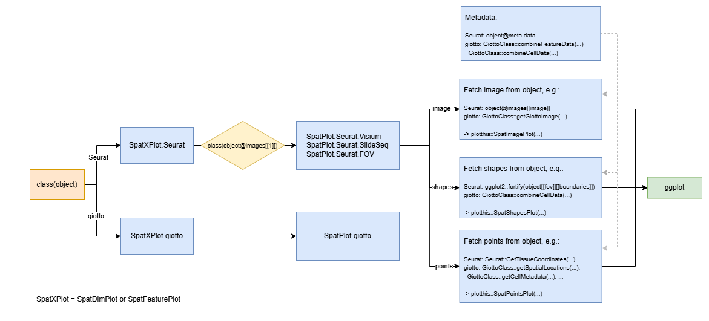

Knowing your spatial data and visualization
Source:vignettes/Knowing_your_spatial_data_and_visualization.Rmd
Knowing_your_spatial_data_and_visualization.RmdSpatial data model used by scplotter
scplotter doesn’t change any structure of existing
objects (Seurat and Giotto) that are supported. While plotting,
scplotter adopts the data model used by spatialdata,
An open and universal framework for processing spatial omics data in
python. We also think of the data as a container for various elements,
including:
- Images: H&E, staining images
- Masks (called Labels by
spatialdata): pixel-level segmentation - Points: transcripts locations with gene information, landmarks points
- Shapes: cell/nucleus boundaries, subcellular structures, anatomical annotations, regions of interest (ROIs)
- Metadata: cell-level information and feature-level information
See also the spatialdata documentation for more details.
The metadata is interpolated with other elements whiled plotted. Other types of elements are plotted by different functions from plotthis package:
- Images are plotted using
plotthis::SpatImagePlot():
library(plotthis)
g <- suppressWarnings(GiottoData::loadGiottoMini("vizgen"))
SpatImagePlot(GiottoClass::getGiottoImage(g)@raster_object)- Masks are generally not plotted by
scplotter, but can be plotted manually usingplotthis::SpatMasksPlot() - Shapes are plotted using
plotthis::SpatShapesPlot():
SpatShapesPlot(GiottoClass::getPolygonInfo(g))- Points are plotted using
plotthis::SpatPointsPlot():
SpatPointsPlot(GiottoClass::getSpatialLocations(g, output = "data.table"))
Flowchat of spatial data visualization

This diagram details the dispatch logic and internal structure of the
SpatXPlot (SpatDimPlot
or SpatFeaturePlot)
function, which handles spatial visualizations for both
Seurat and Giotto objects. The
dispatch begins by checking class(object) and routes the
call to either SpatXPlot.Seurat or
SpatXPlot.giotto. In the Seurat case, if the image class
(class(object@images[[1]])) is recognized (e.g., Visium,
SlideSeq, FOV), it is further dispatched to a specialized
SpatPlot.Seurat.<type> function.
Downstream, all implementations extract image,
shapes, and points from the respective
objects using methods like object@images[[image]],
GetTissueCoordinates(...), or
GiottoClass::getSpatialLocations(...). These are then
passed to the unified plotting functions: SpatImagePlot,
SpatShapesPlot, and SpatPointsPlot, before
being assembled via ggplot. Additionally, the diagram notes
access to metadata (e.g., object@meta.data or
combineFeatureData(...)) that enhances these
visualizations, by coloring points or shapes based on metadata
attributes.
Controlling which layers to plot
To control which layers (image, shapes, points) are plotted in
spatial visualization functions, you can use both specific arguments
(image, shapes, points) and the general-purpose layers
argument.
The layers argument is a character vector specifying
which of “image”, “shapes”, “points” (and “masks”, if supported) to
include, in the order they should be drawn. For example,
layers = c("image", "points") will plot only the image and
the points (if image and points are available in the object and they are
enabled).
Individual logical flags like image, shapes, and points also let you enable or disable specific layers:
image = TRUE/FALSE enables/disables the image background; you can also provide an image name or color.
shapes = TRUE/FALSE controls whether shapes are plotted. It is automatically set to TRUE if shapes_fill_by is provided.
points = TRUE/FALSE defaults to TRUE, and controls whether spatial points (e.g., cells) are shown.
To fine-tune plotting further, use layer-specific argument prefixes
such as image_, shapes_, points_ in the … to pass styling or
data-specific options to the respective plotting functions (plotthis::SpatImagePlot(),
etc.).
SpatDimPlot vs SpatFeaturePlot
The SpatDimPlot and SpatFeaturePlot
functions are designed to visualize spatial data with different
focuses:
-
SpatDimPlot: This function is used to visualize the data with categorical variables, borrowed from [Seurat::SpatialDimPlot][7]. The variables (specified bygroup_by) are applied to the points only. -
SpatFeaturePlot: This function is used to visualize the data with continuous variables, borrowed from [Seurat::SpatialFeaturePlot][8]. The variables (specified byfeatures) are applied to the points only.
Since the difference between these two functions is mainly on the
points layer, so if you have points layer disabled, both functions will
produce the same plot. The SpatDimPlot function is more
suitable for categorical variables, while SpatFeaturePlot
is more suitable for continuous variables.
When multiple features are provided with
SpatFeaturePlot, the plots will be faceted. Each facet will
show the spatial distribution of a single feature, allowing for a clear
comparison across multiple features.
Visualizing the molecules
The molecules from the image based spatial data can be visualized
using SpatDimPlot by specifying the group_by
argument to "molecules" and provide the module list to the
features argument. You can also use the nmols
to limit the maximum number of each molecule to be plotted. This applies
to both Seurat and giotto objects.
Visualizing in-situ vs non-in-situ points
It is hard to provide in-situ plots for Seurat objects by design. For
giotto objects, the insitu points are only plotted necessary. For
general purposes, for example, coloring the points by metadata,
non-in-situ points are plotted by default. But when one requires
use_overlap = TRUE (see also: https://drieslab.github.io/GiottoVisuals/reference/spatInSituPlotPoints.html#arg-use-overlap),
the in-situ points are plotted.
Examples
- Visualizing 10x Visium data prepared with Seurat
- Visualizing 10x VisiumHD data prepared with Seurat
- Visualizing SlideSeq data prepared with Seurat
- Visualizing Xenium data prepared with Seurat
- Visualizing Nanostring CosMx data prepared with Seurat
- Visualizing Akoya_CODEX data prepared with Seurat
- Visualizing Visium data prepared with Giotto
- Visualizing VisiumHD data prepared with Giotto
- Visualizing Xenium data prepared with Giotto
- Visualizing SlideSeq data prepared with Giotto
- Visualizing Spatial CITE-Seq data prepared with Giotto
- Visualizing Nanostirng CosMx data prepared with Giotto
- Visualizing CODEX data prepared with Giotto
- Visualizing vizgen data prepared with Giotto
- Visualizing seqFISH data prepared with Giotto